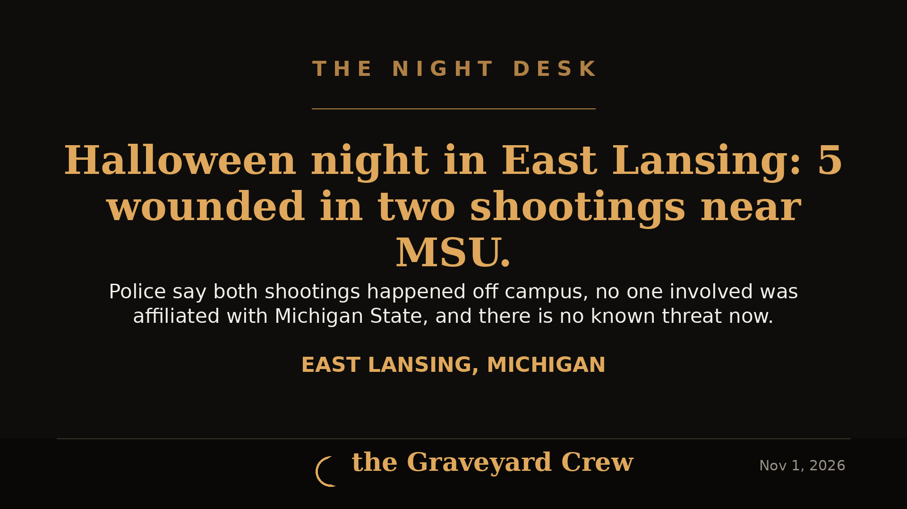
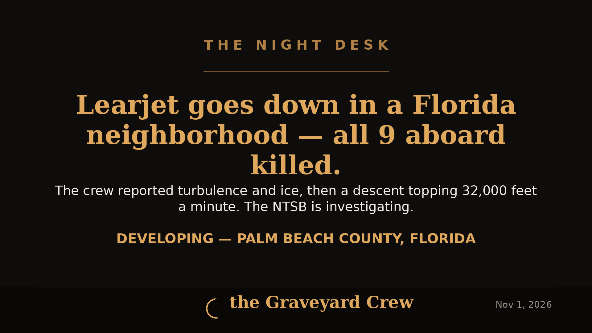
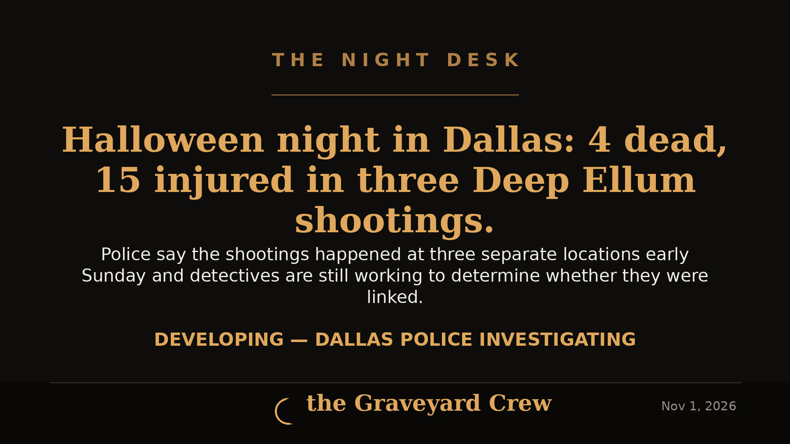
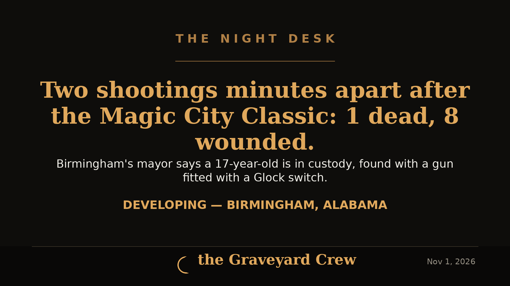
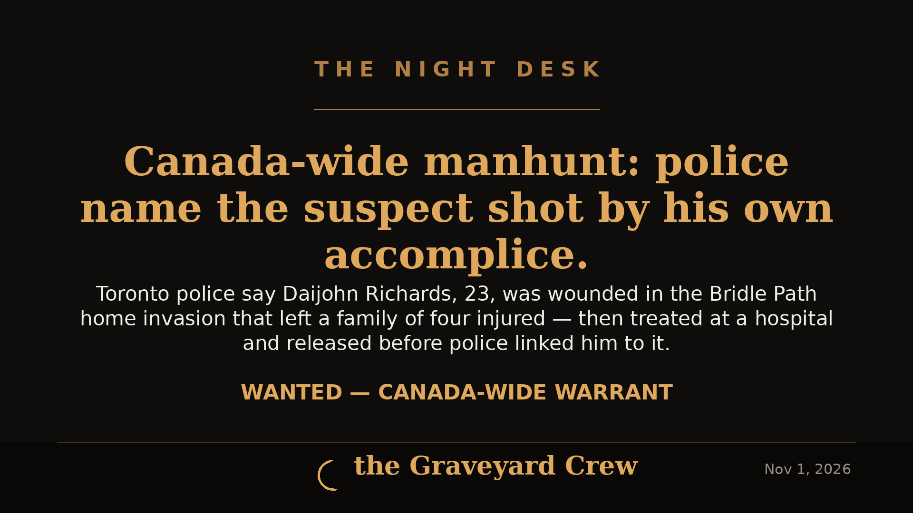
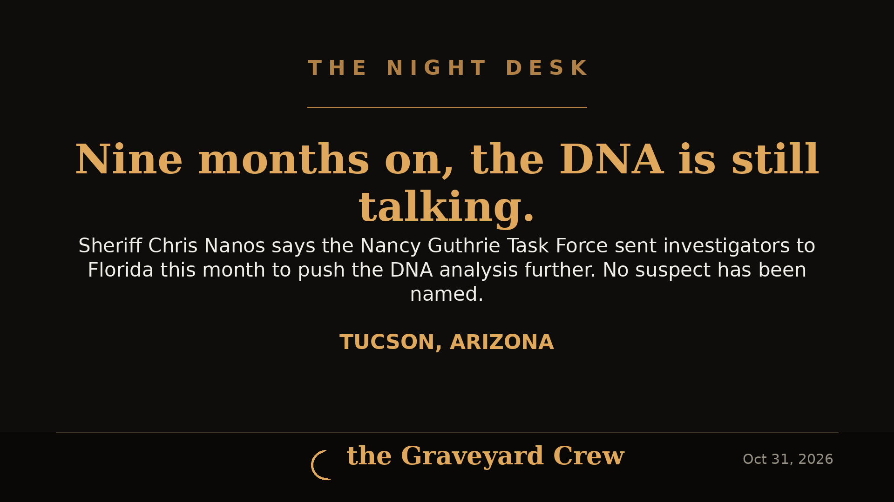

November 02, 2026
Halloween night in East Lansing — 5 wounded in two shootings off the MSU campus
Five people were wounded in two separate shootings in East Lansing on Halloween night, Police Chief Jennifer Brown said at a Nov. 1 press conference. Four victims are stable and the fifth victim's status was unknown to police. Both shootings happened off campus and, MSU's president said, did not involve anyone affiliated with the university.
READ THE STORY →
November 01, 2026
Learjet goes down in a Palm Beach County neighborhood — all 9 aboard killed
A Learjet 60 flying from Austin to the Bahamas crashed near Greenacres, Florida, around 12:50 p.m. Sunday, killing all nine people aboard. Recordings captured the crew reporting turbulence and ice before a descent that topped 32,000 feet per minute. The NTSB is leading the investigation.
READ THE STORY →
November 01, 2026
Halloween night in Dallas — 4 dead, 15 injured in three Deep Ellum shootings
Four people were killed and 15 injured in three separate shootings in Dallas's Deep Ellum entertainment district early Sunday. Police Chief Daniel Comeaux says detectives are still working to determine whether the shootings were linked.
READ THE STORY →
November 01, 2026
Two shootings minutes apart after the Magic City Classic — 1 dead, 8 wounded in Birmingham
Gunfire broke out twice within minutes outside Legion Field after Saturday's Magic City Classic between Alabama A&M and Alabama State, killing one person and wounding eight. Mayor Randall Woodfin said Sunday a 17-year-old is in custody on a 48-hour hold, found with a gun fitted with a Glock conversion switch.
READ THE STORY →
November 01, 2026
Canada-wide manhunt after Toronto mansion home invasion — suspect was shot by his own accomplice, police say
Toronto police have identified Daijohn Richards, 23, as one of three suspects in the Oct. 29 Bridle Path home invasion that left a family of four injured. Police say Richards was accidentally shot in the shoulder by an accomplice, was treated at a hospital and released before investigators linked him to the attack, and is now wanted on a Canada-wide warrant.
READ THE STORY →
November 01, 2026
Portland man charged with attempted murder after shotgun fired at passing driver
Portland police say Marc W. Schaffer, 52, fired at least two shotgun rounds at a passing driver on North Commercial Avenue late Saturday morning. No one was injured, officers took him into custody within seven minutes, and investigators say the shooting was influenced by his perception of the driver's race.
READ THE STORY →
October 31, 2026
Nine Months On: Sheriff Says DNA Work Continues in the Nancy Guthrie Case
The Pima County Sheriff's Department issued a rare update on Friday: the Nancy Guthrie Task Force is still pushing DNA analysis with its labs, and investigators traveled to Florida this month to advance the case. No suspect has been named.
READ THE STORY →
October 31, 2026
Man, 21, shot dead inside Madison Heights Spirit Halloween after altercation — second fatal Spirit Halloween shooting that day
A 21-year-old Detroit man was shot multiple times inside the Spirit Halloween store on John R Road in Madison Heights, Michigan on Friday afternoon and later died. Police took a 21-year-old Oak Park man into custody and recovered a 9mm handgun; the case is headed to the Oakland County Prosecutor.
READ THE STORY →October 31, 2026
Multiple people found shot on South Hemlock Lane in Appleton, Wisconsin — no suspect in custody
Appleton police found multiple victims with apparent gunshot wounds in the 3400 block of South Hemlock Lane on Friday night. No suspect was in custody late Friday, and Midway Road was closed while officers worked the scene.
READ THE STORY →October 31, 2026
Congo Ebola deaths top 5,000 as fear of continent-wide spread mounts
The Associated Press reports 5,026 people have died out of 10,351 infected in Congo's Ebola outbreak, driven by the Bundibugyo strain, with cases now also reported in Kenya, Nigeria and Uganda.
READ THE STORY →October 31, 2026
Shooting at Solano Town Center Spirit Halloween in Fairfield leaves 1 dead, 6 wounded
One person was killed and six others were wounded in a shooting at the Spirit Halloween store at Solano Town Center in Fairfield, California. The suspect had not been identified when the Associated Press last updated its report early Friday.
READ THE STORY →
October 31, 2026
Fugitive inmate captured in Arkansas after 29-hour manhunt
Rodney Smith, 41, escaped the Brinkley Police Department detention center Thursday morning after allegedly assaulting law enforcement personnel and taking an officer's Taser. Arkansas State Police troopers found him Friday afternoon at a farm shop in Marianna and took him into custody without incident.
READ THE STORY →
October 29, 2026
52 years later, DNA ties Ted Bundy to the murder of Melissa Ann Smith
Melissa Ann Smith, 17, vanished in Utah in October 1974 and was found dead nine days later. This week Utah investigators announced that new DNA testing has closed her case — her killer was Ted Bundy, executed in 1989.
READ THE STORY →
October 28, 2026
Manhunt crosses state lines: escaped Tennessee murder convict's stolen truck found abandoned in Illinois
Jacob Allen Morley, 28, serving life for the 2022 murder of his coworker Cody Birchfield, escaped a Tennessee prison Sunday night. The truck he stole was found abandoned early Tuesday in Marion, Illinois — Morley himself is still missing, and a $17,500 reward is now offered for information leading to his arrest.
READ THE STORY →
October 24, 2026
Nearly 40 years later: arrest in the 1986 Spokane cold-case murder of Mary Ann Turner
DNA preserved under Mary Ann Turner's fingernails — and a licked envelope from a police ruse — led Spokane detectives to David Tibbett, 74, charged with second-degree murder nearly four decades after she was found dead in a Spokane alley.
READ THE STORY →
October 24, 2026
15-year-old Mina Kurdian killed at home in Arcadia; ex, 20, hospitalized after shooting himself as police moved in
Mina Kurdian, 15, was found shot dead Thursday morning in her Arcadia home. Her family says her 20-year-old ex showed up drunk at 5 a.m., was kicked out, then returned and shot through a window to get in.
READ THE STORY →
October 24, 2026
VERDICT: Guilty on all counts — the 14-year Faith Hedgepeth cold case finally gets its answer
A Durham jury convicted Miguel Salguero-Olivares of murder, rape, sexual offense and burglary in the 2012 killing of UNC student Faith Hedgepeth. Life without parole — 5,158 days after she died.
READ THE STORY →
October 24, 2026
VERDICT: Rodney Hinton Jr. convicted of murder in the deputy-killing crash that shook Cincinnati
The jury rejected his insanity defense — and convicted him of murder, reckless homicide and felonious assault in the death of Deputy Larry Henderson. Sentencing is November 16.
READ THE STORY →
October 23, 2026
Charged — Five Months Later: 69-Year-Old North Carolina Woman Arrested in Husband's May Death
Dale Ann Carr, 69, was arrested October 23 and charged with first-degree murder in the May 30 death of her husband Paul Carr. She told investigators he shot himself — deputies found him with gunshot wounds to the head, arm, and wrist, eight shell casings in the house, and the home's security cameras cut off earlier that day.
READ THE STORY →
October 23, 2026
Seven Killed in Attack on Church Funeral in Jordan; Manhunt Underway
Gunmen opened fire during a funeral at a Greek Orthodox church in Hamoud village, Jordan's Karak governorate, on Friday, October 23, killing seven people and wounding 34. Interior Minister Mazen al-Faraya called it an unprecedented terrorist act. No group has claimed responsibility.
READ THE STORY →
October 23, 2026
40 Years Later: Guilty Verdict in the Christmas Eve 1985 Killing of Leslie McCray
David Nelson Austin, 65, was convicted of first-degree murder, kidnapping and sexual battery in the 1985 abduction and killing of 17-year-old UNF student Leslie McCray. The case sat cold for decades until DNA testing matched Austin in a Michigan corrections database.
READ THE STORY →
October 23, 2026
One Killed, Four Wounded in Paris-Suburb Drive-By Shooting; Suspect Arrested
A gunman opened fire from a vehicle in Trappes and La Verrière on Friday morning, killing one person and wounding at least four, including a 12-year-old girl. A 39-year-old suspect was arrested; France's anti-terrorism prosecutors are probing a possible racist motive.
READ THE STORY →
October 23, 2026
FBI Foils Alleged ISIS-Linked Plot by 17-Year-Old to Assassinate Rep. Keith Self
Federal agents arrested a 17-year-old Texas boy accused of plotting to assassinate Rep. Keith Self at a public event and carry out a separate ISIS-inspired attack in North Texas. The arrest happened Oct. 5 — the news broke publicly this week.
READ THE STORY →
October 23, 2026
Brother Charged With Murder in Stabbing Death of 15-Year-Old Trenton Grant, Monroe Township
Tyson Grant, 27, faces open murder plus four life-maximum felonies in the Oct. 17 stabbing inside a burning mobile home on Raintree Boulevard that killed his brother, a Monroe High sophomore, and seriously hurt their mother and stepfather.
READ THE STORY →
October 23, 2026
Arrested after an 11-day manhunt: Akkini McDade, 24, charged with murder in Lubbock shooting that killed Delton Lewis
A $5,000 reward, U.S. Marshals, and hundreds of overnight man-hours — how an 11-day manhunt ended with a murder arrest in East Lubbock.
READ THE STORY →Showing the latest 25 — browse the full archive →